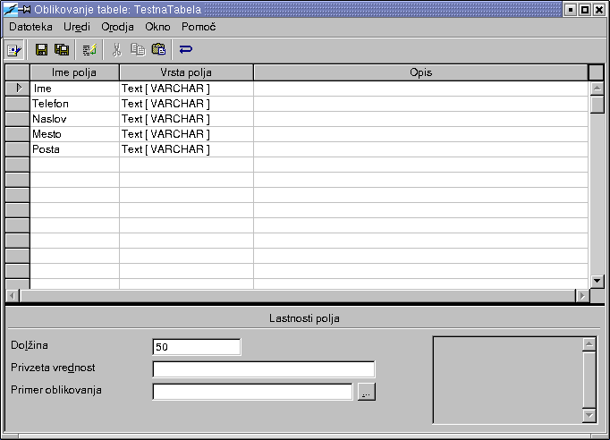
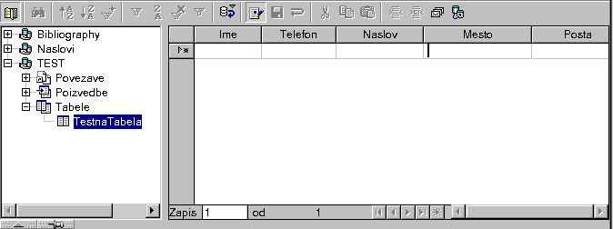

Kako ustvariti vir podatkov
Provided by
the OpenOffice.org Documentation Project
Vsebina:
1. Ustvarjanje vira podatkov
Ti koraki vas bodo vodili skozi nastavitve vira podatkov v OpenOffice.org sistemu. Ustvarili bomo bazo tipa dBase zaradi uporabnosti na razli�nih platformah.
Izberite meni Orodja-Viri podatkov.
Kliknite Nov vir podatkov.
Vnesite ime vašega vira podatkov. OPOMBA: Uporabil bom TEST kot ime vira podatkov.
Pritisnite Tab.
Izberite dBase kot vir podatkov. OPOMBA: Uporabili bomo dBase, ker omogo�a popolno kontrolo nad bazo podatkov na lokalnem sistemu.
Pritisnite Tab.
Vnesite imenik, v katerega bo program shranil datoteke. Vnesite ime imenika, za katerega ste prepri�ani, da NE obstaja. Program ga bo avtomatsko ustvaril.
Kliknite Uporabi.
2. Dodajanje tabel v vir podatkov
V tem poglavju si bomo ogledali, kako dodati tabele v vir podatkov. Predvidevamo, da vam vaš vir podatkov dovoljuje poln dostop do baze podatkov. Trenutno sta dBase ali razpredelnica edina tipa podatkov, ki omogo�ata tak dostop do datotek na vašem ra�unalniku. JDBC in ODBC lahko uporabite, �e �e imate nameš�eno bazo podatkov, kot npr.: MySQL, SQL Server ali ORACLE.
Kliknite na jezi�ek Tabele
Kliknite na ikono Nova tabela na�rtovanje
Pokazalo se bo okno za oblikovanje tabele.

Vnesite Ime.
Pritisnite 3 krat Tab.
Vnesite Telefon.
Pritisnite 3 krat Tab.
Vnesite Naslov.
Pritisnite 3 krat Tab.
Vnesite Mesto.
Pritisnite 3 krat Tab.
Vnesite Posta.
Kliknite na Datoteka.
Kliknite na Shrani.
Izberite ime vaše tabele. OPOMBA: Uporabili bomo ime TestnaTabela.
Zaprite okno Oblikovanje tabele.
Zaprite okno Upravljanje vira podatkov.
3. Urejanje podatkov v viru podatkov
V tem poglavju si bomo ogledali, kako lahko uporabimo OpenOffice.org za vnos, urejanje in odstranjevanje vrednosti v viru podatkov.
Dodajanje zapisov
Pritisnite F4.
Poka�e se okno Raziskovalca.

Kliknite na vir podatkov TEST.Kliknite na Tabele.
Kliknite na TestnaTabela.
�e v tabeli ne obstaja noben zapis, bo katerakoli pritisnjena tipka za�ela vnos v nov zapis. Druga�e lahko kliknete na gumb Nov zapis.
Vnesite naslednje podatke (za premikanje med polji pritisnite Tab).
|
Janez Novak |
01 2345 898 |
Lepa Ul. 12 |
Naše mesto |
1000 |
|---|---|---|---|---|
|
Petra Novak |
041 234 567 |
Cvetli�na c. 3 |
Njeno mesto |
2000 |
Urejanje zapisov
Kliknite na polje telefon pri Janezu Novaku.
Vnesite 02 6666 555
Pritisnite puš�ico navzdol (tipka). OPOMBA: Prehod na naslednji zapis shrani vaše spremembe.
Brisanje zapisov
Kliknite na oznako vrstice pred Petro Novak. Klik na ali na
 bo ozna�il zapis.
bo ozna�il zapis.Desni klik.
Izberite Izbriši vrstice.
4. Kako naprej?
Zdaj, ko ste videli nekaj stvari, ki jih zna OpenOffice.org delati z bazami podatkov, bi predlagal naslednje:
Poigrajte se z razli�nimi tipi polj, ko dodajate tabele.
Oglejte si SQL poizvedbe v oknu vira podatkov.
OPOMBA: Ni�esar ne boste pokvarili ali izbrisali, �e se boste poigrali z bazo podatkov, ki je bila ustvarjena v tem How To.
5. Zasluge
Avtor: Scott Carr
Intgr by: Gianluca Turconi
Nazadnje popravljeno: 2. marec 2002
Prevod: Anton Tomani�, 24. oktober 2002
Dodatne informacije: OpenOffice.org Documentation Project http://whiteboard.openoffice.org/doc/index.html
Slovenski OpenOffice.org http://openoffice.lugos.si